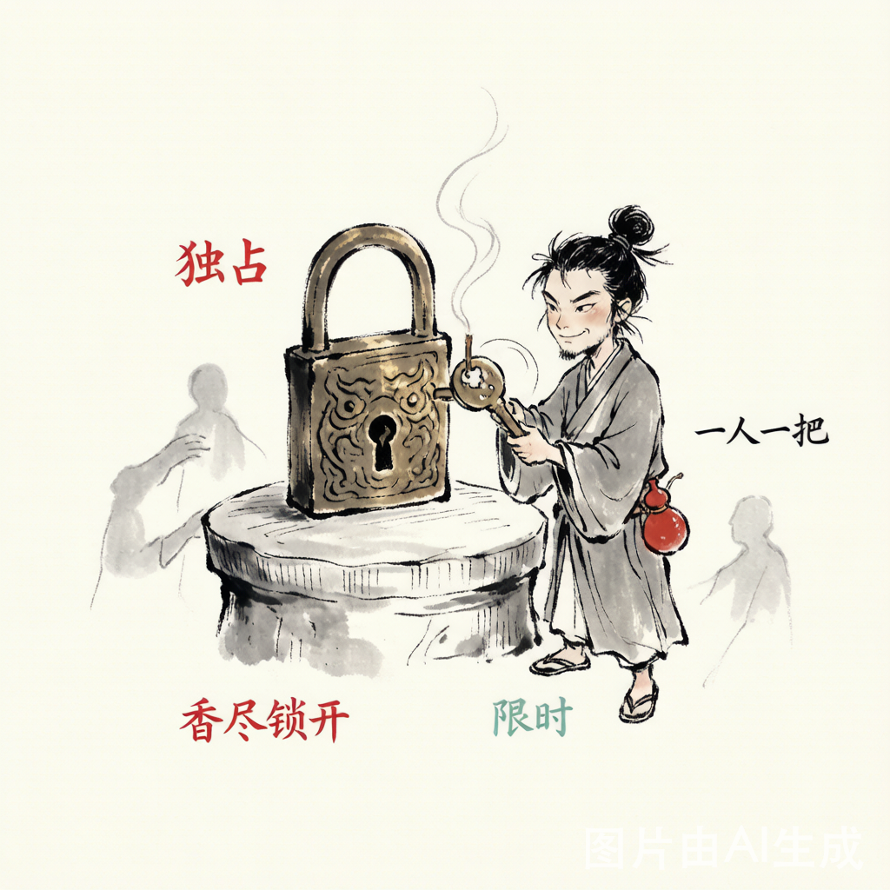
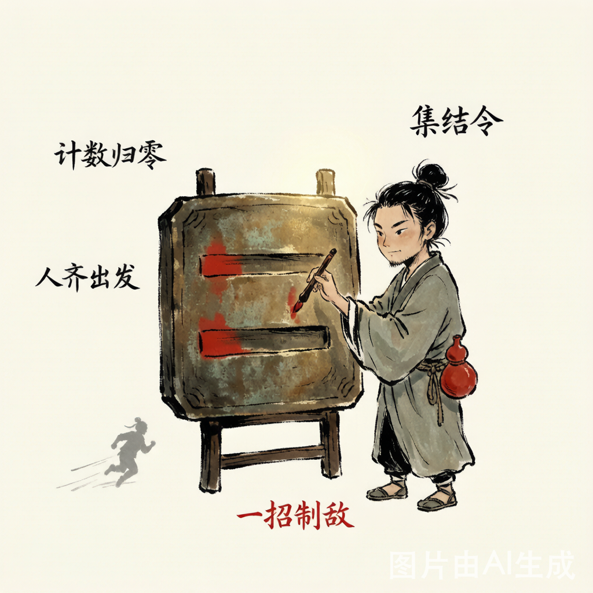
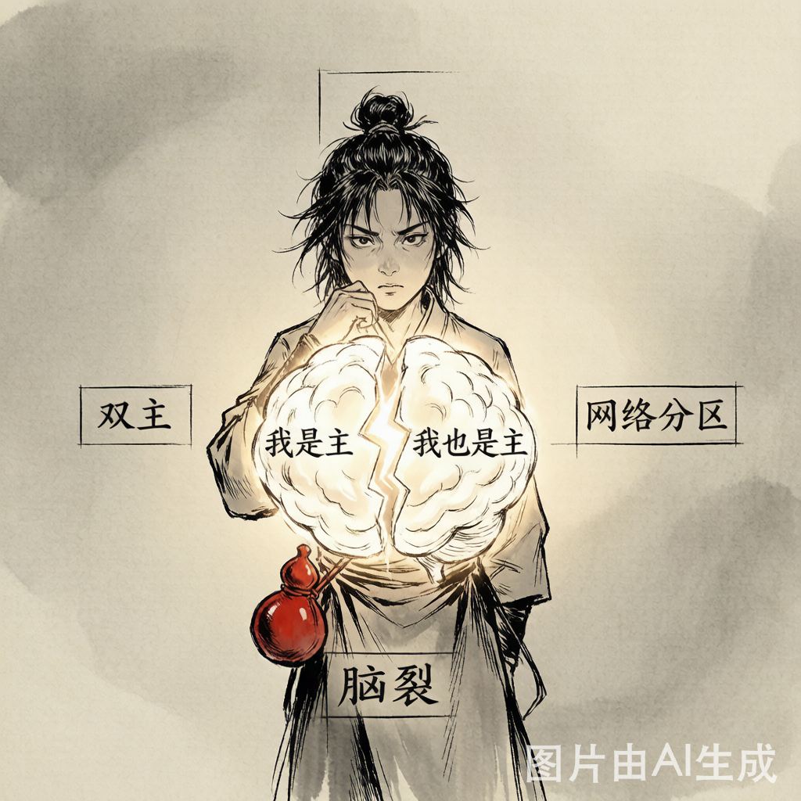
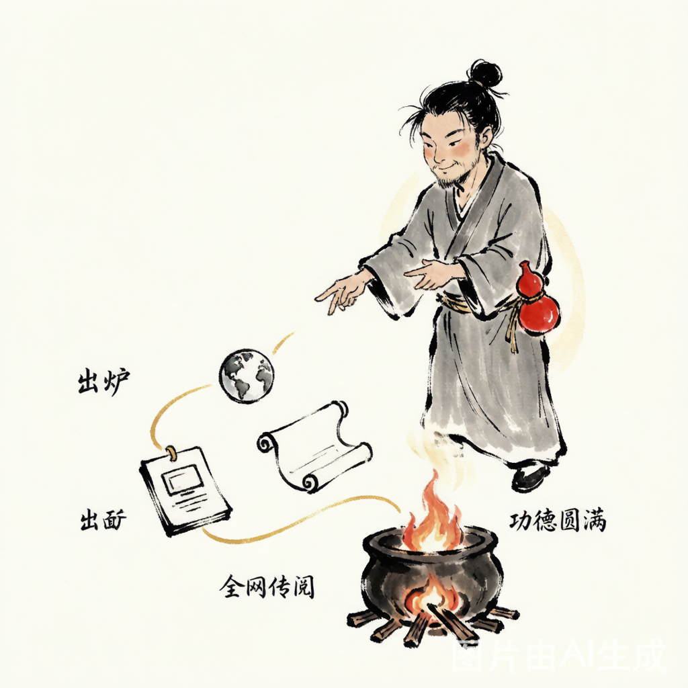
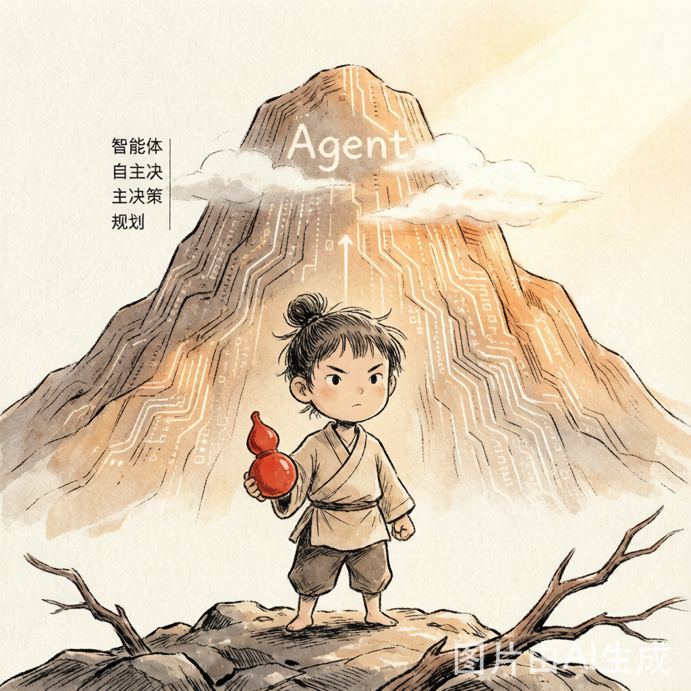

武侠风
AQS：分布式锁的内功心法
深入 Java AQS（AbstractQueuedSynchronizer）源码，以武林门派比喻，讲透 CLH 队列、独占/共享模式、Condition 条件队列——锁之根基在此一举。
技术如武学，日日修炼，久久为功

深入 Java AQS（AbstractQueuedSynchronizer）源码，以武林门派比喻，讲透 CLH 队列、独占/共享模式、Condition 条件队列——锁之根基在此一举。



